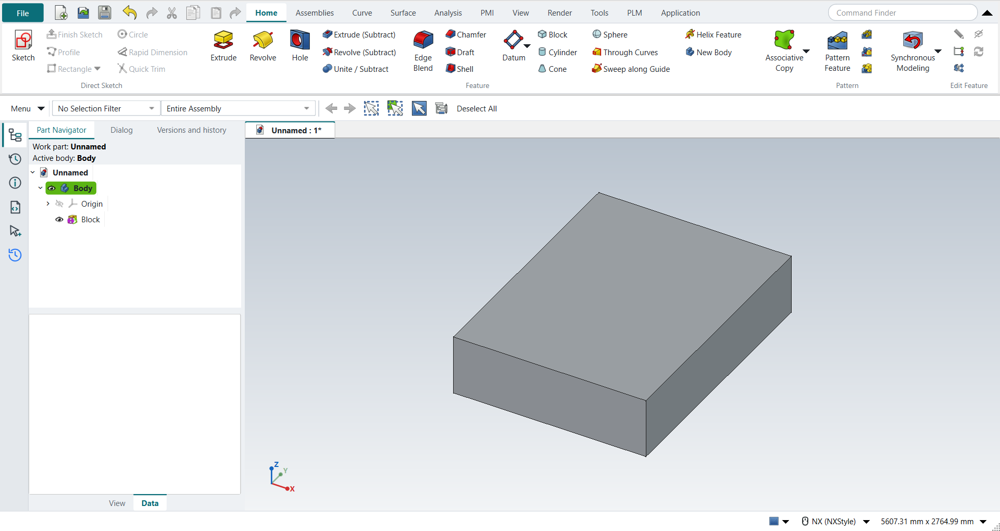
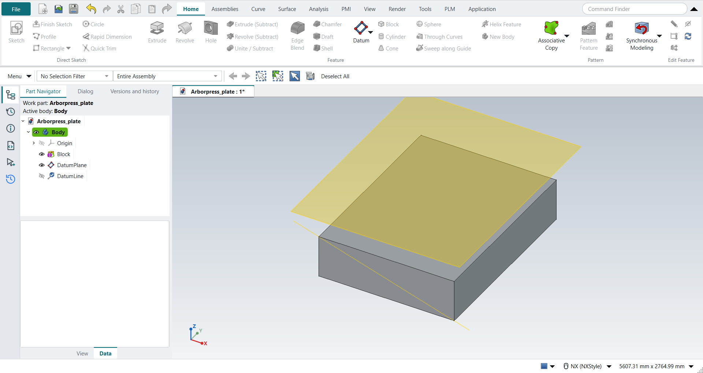
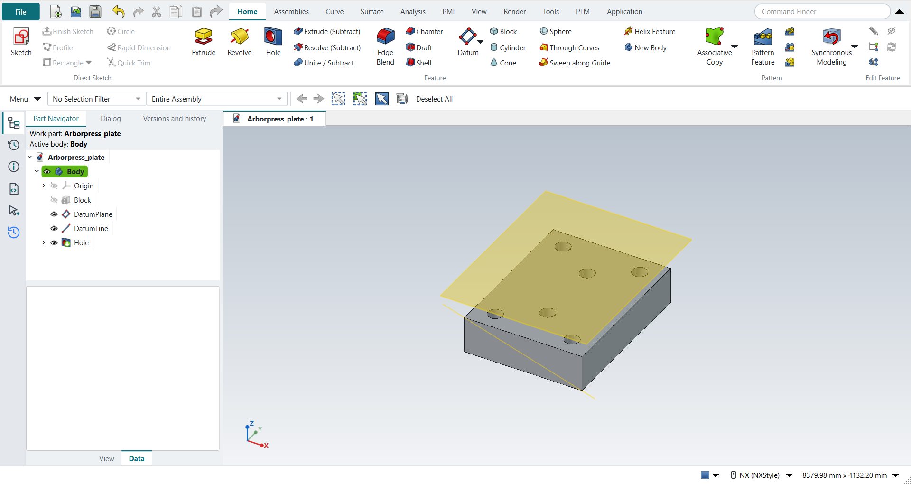

Tutorial AN: Arbor Press Plate
| Source |
Ming C. Leu, Wenjin Tao, Amir Ghazanfari and Krishna Kolan, NX 12 for Engineering Design (Missouri University of Science and Technology), sections 4.2.1 (Model a Block), 4.3 (Reference Features) and 4.5.1 (General Hole). The book builds the plate in three visits; here they follow one another. |
| You learn |
Block with Origin and Edge Lengths, Fit and Trimetric, Datum Plane at an offset, Datum Axis through two points, Hole with its points sketched on a face |
| Sizes |
the book’s, in inches, typed in millimetres. A block 65 × 85 × 20 with its origin at (0, 0, 0). A datum plane 15 above the top face. Six simple holes Ø8, 25 deep with a 118° tip, at (11.25, 10), (32.5, 23.5), (53.75, 10), (11.25, 75), (32.5, 61.5) and (53.75, 75). |
The book’s figure picks the datum axis’s points without coordinates: a bottom corner and the opposite top corner of the front face. Here they are (65, 0, 0) and (0, 0, 20), so the axis is the front face’s diagonal. The plate is 20 thick, so holes 25 deep go through it.
Step by step
1. The block
Ctrl+N, then Block (Home › Feature). In the Block dialog keep Origin and Edge Lengths, leave XC, YC and ZC at 0, and type Length 65, Width 85 and Height 20. Click OK.
Ctrl+F fits the view, and Home turns it to Trimetric (NX: MB3 > Orient View > Trimetric).
Save the part as Arborpress_plate.

2. A datum plane and a datum axis
Select the block’s top face and choose Datum > Datum Plane. FreeCAD attaches the plane to the face; in the Dialog panel type 15 in the offset along Z and press MB2.
Select two corners of the block, here (65, 0, 0) and (0, 0, 20), and choose Datum > Datum Axis. FreeCAD takes the axis through the two points, as NX’s Inferred type does; press MB2.

3. The holes
Select the top face and click Hole. NX-Style starts a sketch on the face, which is NX’s Sketch Section in the Hole dialog’s Position group. Click Point (Sketch › Curve), then for each of the six points type XC and YC in the fields beside the pointer, pressing Enter after each. Press MB2, then Ctrl+Q.
The Hole dialog opens. Keep the simple hole, and type Diameter 8, Depth 25 and the tip angle 118°. Press MB2.

Save the part.
The replay
| # | In the book (NX) | In FreeCAD NX-Style | Result | Notes |
|---|---|---|---|---|
AN1 |
Create a new file (Arborpress_plate) |
Ctrl+N, Model template |
same |
new document ['Unnamed'] |
AN2 |
Units in the New dialog (the book picks inches) |
metric part kept; book sizes typed in mm |
differs |
FreeCAD sets units in Preferences, not in the New dialog; NXStyle defaults to millimetres (document: Standard (mm, kg, s, °); 25.4 mm shows as 25.40 mm) |
AN3 |
Block: Origin and Edge Lengths, Point Dialog at (0, 0, 0), Length 65, Width 85, Height 20, OK |
ribbon 'Home › Feature > Block', Type 'Origin and Edge Lengths', XC/YC/ZC 0 and the lengths typed (1651, 2159, 508 mm), OK |
same |
Boolean None; block 1651.0 x 2159.0 x 508.0 mm from (0, 0, 0); one undo step ['Block']. The Point Dialog’s XC, YC, ZC are fields in the Block dialog (NX opens it as its own window) |
AN4 |
Fit (Ctrl+F), Orient View > Trimetric |
Ctrl+F, Home (NX’s Trimetric key) |
same |
view direction (-0.4096, 0.7094, -0.5736) (trimetric 1.000000); all eight corners of the block in the window True |
AN5 |
Save the part |
file name given once by script (the system file dialog is not driven); a change, then the Ctrl+S key |
same |
Arborpress_plate.FCStd rewritten by Ctrl+S: the file holds the change and the part is unmodified afterwards (modified before the key: True); FreeCAD format, not .prt |
AN6 |
Datum Plane (Inferred): the top face of the block |
top face (Face6) selected + ribbon 'Home > Datum > Datum Plane' |
same |
the plane is attached to the face; FreeCAD’s attachment dialog opens with it |
AN7 |
Offset Distance 15, OK |
'attachmentOffsetZ' = 381 mm, MB2 = OK |
same |
datum plane at z = 889.00 mm (top face 508 + 381), normal (0.0, 0.0, 1.0) |
AN8 |
Datum Axis: the two points on the block |
Vertex6 and Vertex1 selected + ribbon 'Home > Datum > Datum Axis' |
same |
FreeCAD infers Through Two Points from the two vertices, as NX’s Inferred does |
AN9 |
OK: the Datum Axis is the diagonal |
MB2 = OK |
same |
mode TwoPointLine; direction (-0.9558, 0.0, 0.2941) along the diagonal of the front face (65 x 20); through the first point within 6e-14 mm |
AN10 |
Hole: General Hole, Position > Sketch on the top face |
top face selected + ribbon 'Home › Feature > Hole' |
same |
the Hole starts a sketch on the face, and Finish Sketch carries on into the Hole dialog, as NX’s Sketch Section in the Position group |
AN11 |
Point Dialog: the six points of the table, each OK |
ribbon 'Sketch › Curve > Point', XC and YC typed in the on-view fields for each point, MB2 |
same |
6 points; all at the table coordinates; sketch on the top face (z = 508.0 mm) |
AN12 |
Simple Hole: Diameter 8, Depth 25, Tip Angle 118°, Boolean Subtract, OK |
dialog open True; 'Diameter' = 203.2 mm, 'Dimension', 'Depth' = 635 mm, 'DrillPointAngle' = 118°, MB2 = OK |
same |
volume 1711926130.6 mm^3, expected 1711926130.6; 1 solid(s); the plate is 20 thick, so the holes go through it; values as typed True; FreeCAD’s Hole always subtracts from its body |
AN13 |
The plate: the block with its six holes |
compared with the book’s dimensions |
same |
same solid as the reference: 0 mm³ differ, box within 0 mm, 12 faces (12 in the reference) |
AN14 |
Save the part |
file name given once by script (the system file dialog is not driven); a change, then the Ctrl+S key |
same |
Arborpress_plate.FCStd rewritten by Ctrl+S: the file holds the change and the part is unmodified afterwards (modified before the key: True); FreeCAD format, not .prt |
| Result | Means |
|---|---|
same |
The book’s NX steps work as written. |
differs |
It works, but the FreeCAD way is different; the notes say how. |
limit |
The book’s way fails in FreeCAD itself; a workaround follows in the next steps. |
missing |
FreeCAD has no such function; a stand-in follows. |
skipped |
Not replayed; the notes give the reason. |
FAILED |
Did not work. |
The finished plate is compared with the book’s, built from its dimensions: the block less six holes through it.
What differs from NX
-
NX’s Point Dialog opens as its own window. In NX-Style’s Block dialog its XC, YC and ZC are fields of the dialog itself.
-
NX’s Datum Plane dialog offers the offset as soon as you pick the face. FreeCAD attaches the plane to the face and takes the offset as the attachment’s Z offset.
-
NX places a hole’s points with the Point Dialog in the hole’s sketch. FreeCAD’s Hole drills at the sketch’s points, and the points are typed in the on-view fields, which are NX’s XC and YC boxes.
-
FreeCAD’s Hole always subtracts from its body; NX’s Hole has a Boolean group.